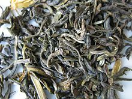

Černý čaj
Černý čaj je čaj, který prochází delší oxidací (někdy se nesprávně mluví o fermentaci) než zelený čaj, oolong (polozelený) nebo bílý čaj. Ale všechny tyto typy jsou vyráběny z lístků Camellia sinensis. Černý čaj má silnější vůni než ostatní méně oxidované čaje.
V Číně je černý čaj známý pod názvem červený čaj , který více vystihuje barvu čaje. Pod názvem černý čaj se v Číně spíše setkáme s tradičním puerhem. Tím se Čína liší od západního světa, kde se "červeným čajem" rozumí spíše jihoafrický rooibos.
Zatímco zelený čaj ztrácí většinou svou vůni během roku, černý čaj si udrží svou vůni po několik let. To byl také důvod, proč byl dlouho využíván v obchodu a v Mongolsku, Tibetu a na Sibiři byl až do devatenáctého století využíván jako měna. Od doby dynastie Tchang byl černý čaj namočený v horké vodě používán jako barvivo na látku pro nižší třídu obyvatelstva, která si nemohla dovolit kvalitnější barvy na oblečení. Černý čaj byl jediný čaj známý západnímu světu. Ačkoliv popularita zeleného čaje postupně roste, černý čaj stále zaujímá více než devadesát procent čaje prodaného na Západě.
Výroba černého čaje
- Po sklizni se listy nejprve nechají zavadnout pomocí proudění vzduchu.
- Poté se černé čaje zpracovávávají jednou z následujících cest. CTC (drcení, řezání, stočení) je metoda používaná pro čajové listy nižší kvality, které končí v čajových sáčcích a je prováděna strojově. Klasické zpracování je prováděno jak mechanicky, tak ručně. Používá se pro čaje vyšší kvality. Listy zůstávají vcelku a přesný postup se liší podle druhu čaje.
- Dále se nechají čajové listy za kontrolované teploty a vlhkosti oxidovat. Úroveň oxidace určuje kvalitu čaje.
- Poté jsou listy usušeny, aby se zabránilo další oxidaci.
- Nakonec jsou listy roztříděny do tříd podle svojí velikosti (celé listy, zlomené a prach). Rozdělení se obvykle provádí pomocí sít. Čaj může být poté dále tříděn podle dalších kritérií.
Čaj je poté připraven k balení.